Lotes reais de azeite, água e café, financiados por investidores qualificados, numa app onde o jogo vive na colheita e no conhecimento.
Hoje o lagar vende granel ao embalador, que vende ao distribuidor, que vende ao restaurante. A Sprout encurta o caminho e redistribui o diferencial.
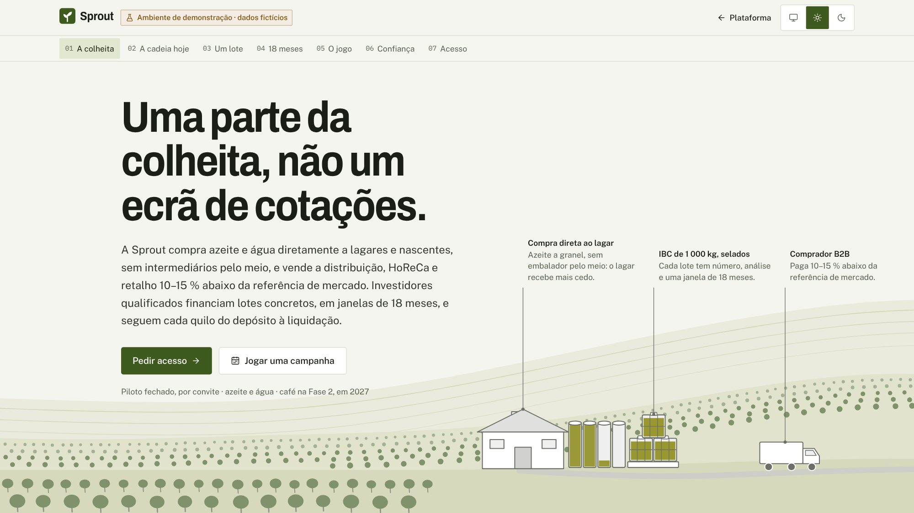
O bloco entre produtor e comprador é o diferencial granel → comprador. A margem líquida verificada do embalador é só 0,19–0,50 €/kg dentro dele.
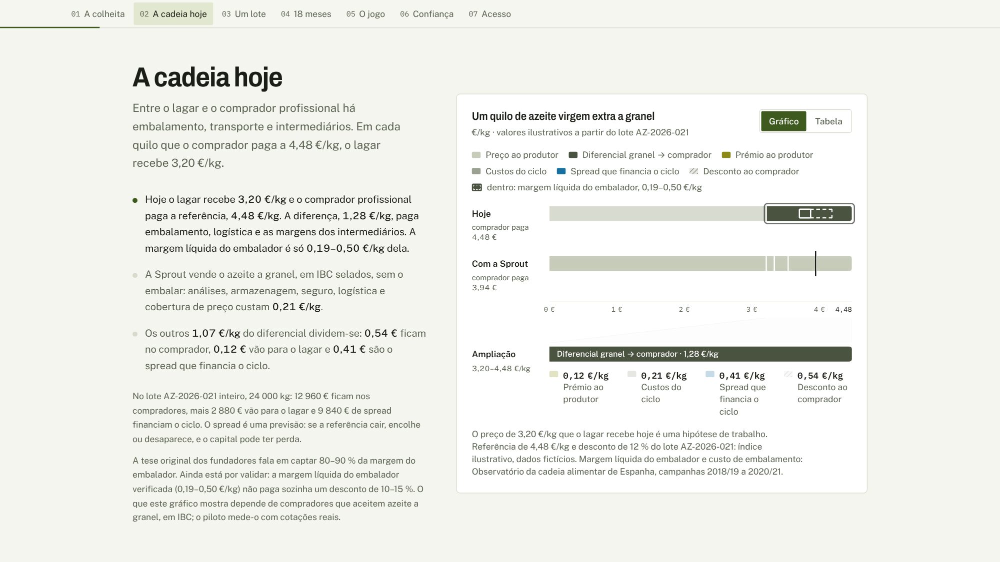
Abre com a estação, não com dinheiro: dia 13 da campanha 2026/27, o Diário dos produtores em direto, missões e nível de conhecimento.
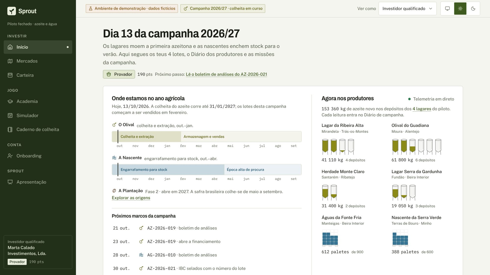
O Olival, A Nascente e A Plantação (fase 2). O mapa de origens acende à medida que o investidor estuda e participa.
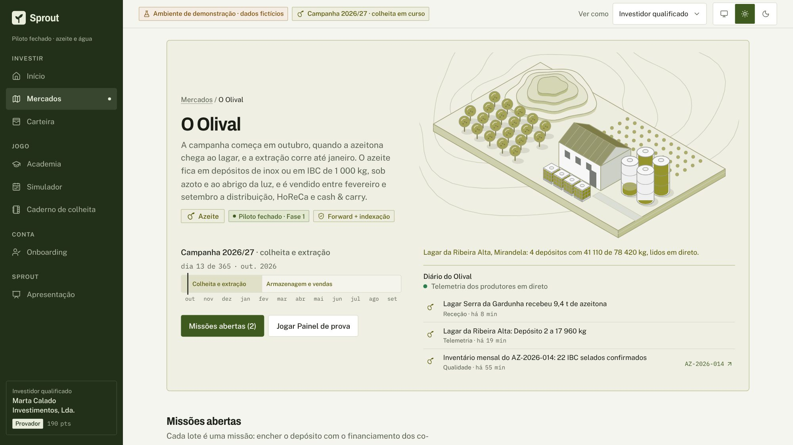
AZ-2026-021: 24 t de azeite virgem extra de Trás-os-Montes. A missão é encher o depósito: 60 %, 7 co-financiadores.
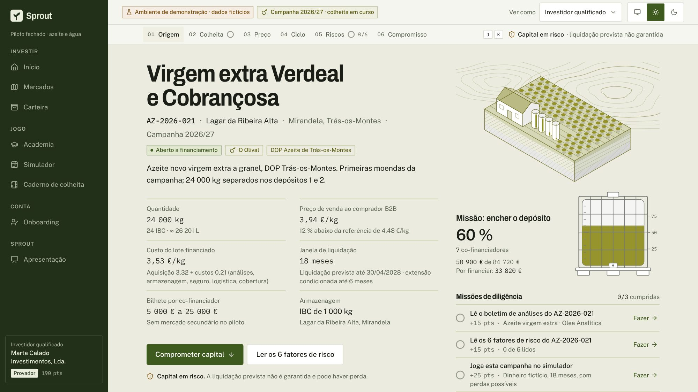
O stock do lagar ao vivo e o boletim de análises ao lado dos limites legais. Ler o boletim conta como diligência.
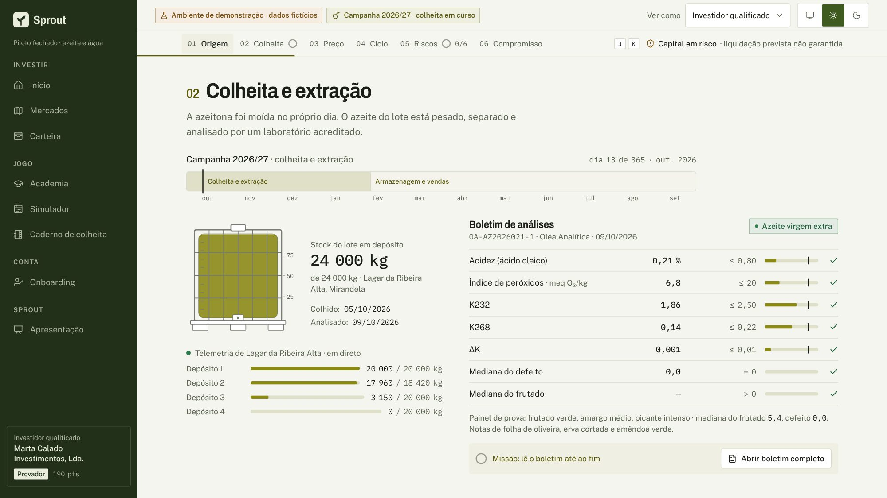
Compra, armazenagem, vendas B2B e liquidação prevista, com a bifurcação entre liquidação, extensão condicionada e refunding.
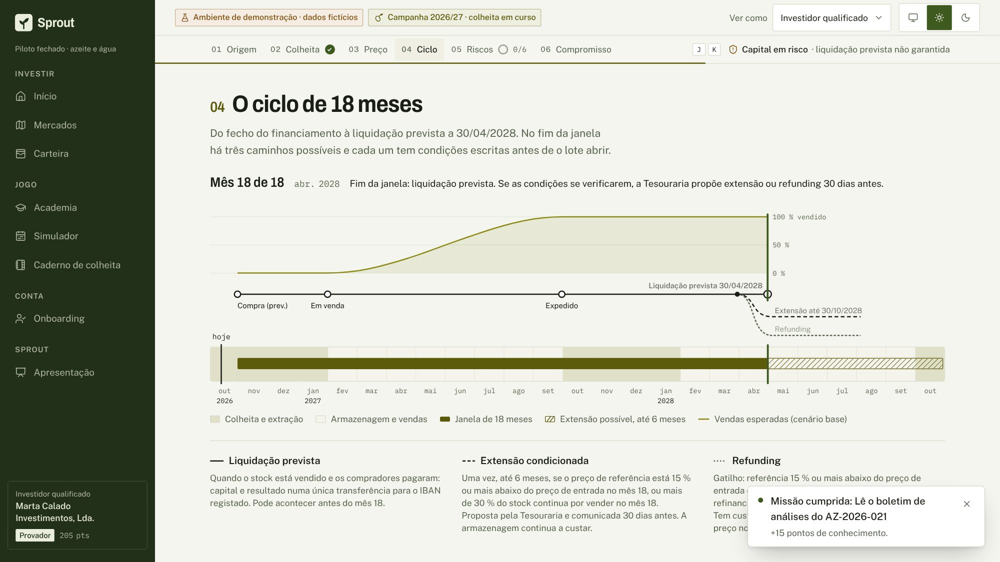
Seis fatores de risco que é preciso abrir e confirmar. O compromisso só desbloqueia com todos lidos.
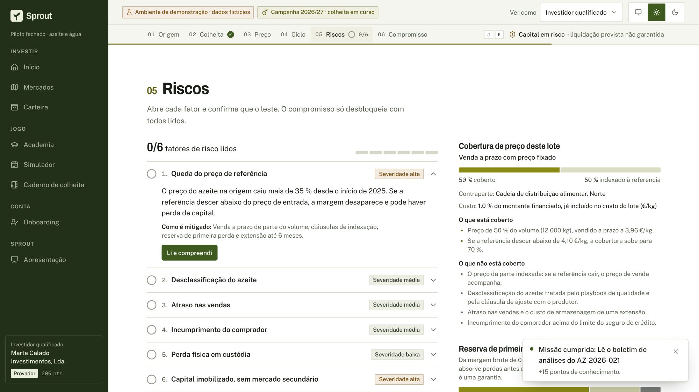
O montante traduz-se em mercadoria. Confirma-se segurando o botão; o resultado é um selo de lacre e uma carta de origem, com 4 dias para cancelar.
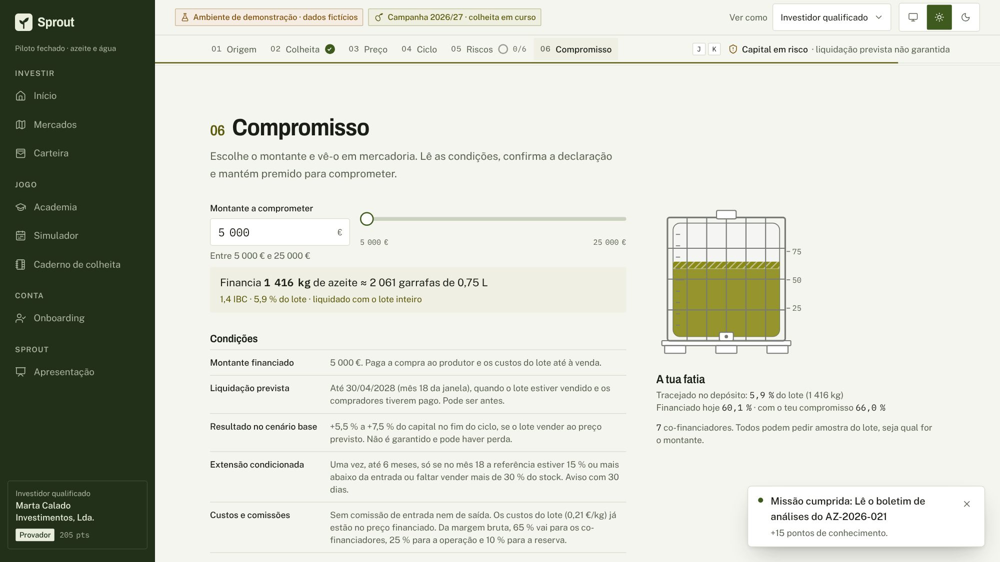
O que se financiou em quilos e garrafas, onde está a mercadoria, quando se prevê liquidar e as regras de saída.
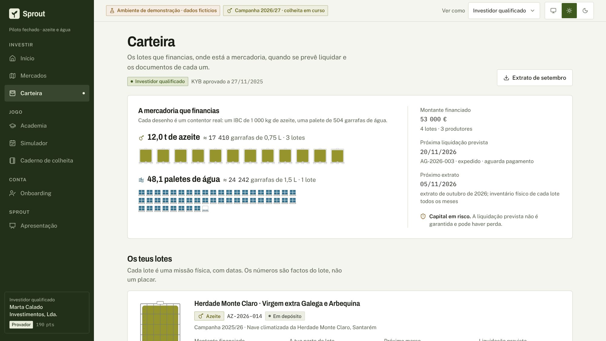
Módulos e mini-jogos com conteúdo real, como classificar azeite no Painel de prova. Os níveis dão acesso a conhecimento, nunca a preços.
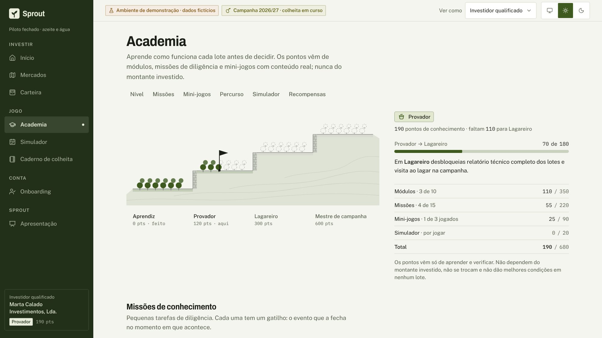
18 meses com 50 000 € fictícios, choques de preço e perdas possíveis. É a simulação de perdas que o regulamento europeu pede, transformada em jogo.
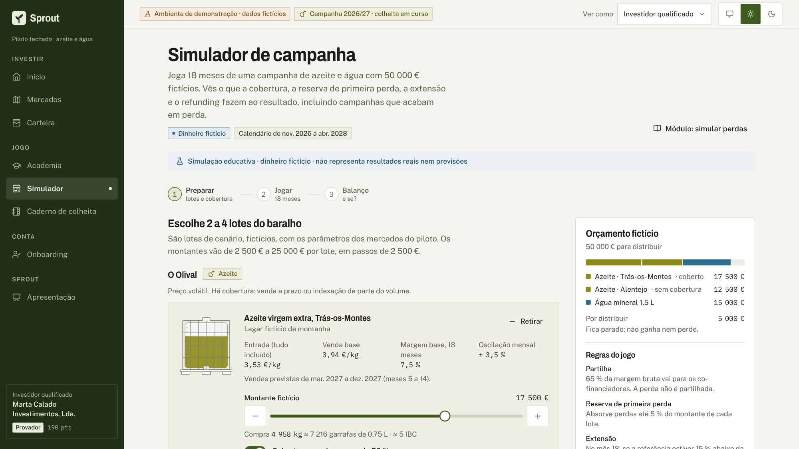
Selos de origem e cartas com os dados reais de cada lote. Ganham-se por diligência ou participação; não valem dinheiro.
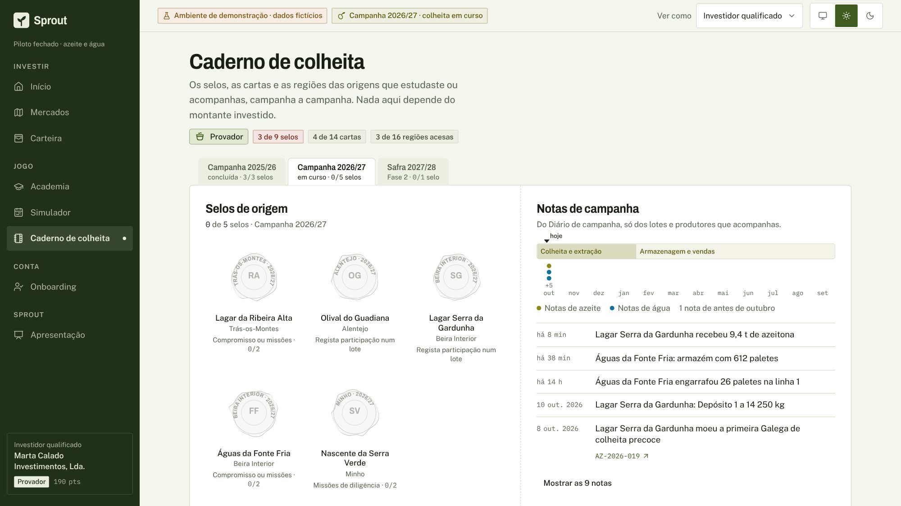
Contas segregadas num PSP licenciado na UE, reconciliação diária, fila de KYC e a revisão que prova que nenhuma mecânica proibida está em uso.
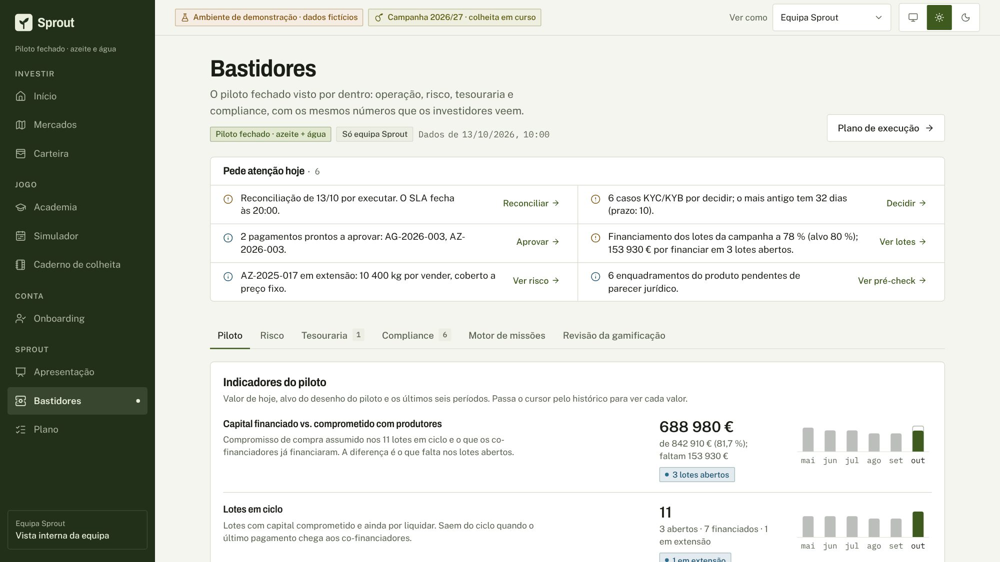
Responsáveis, prioridade zero (jurisdição, regulação, mismatch agrícola), decisões e fases até ao gate.
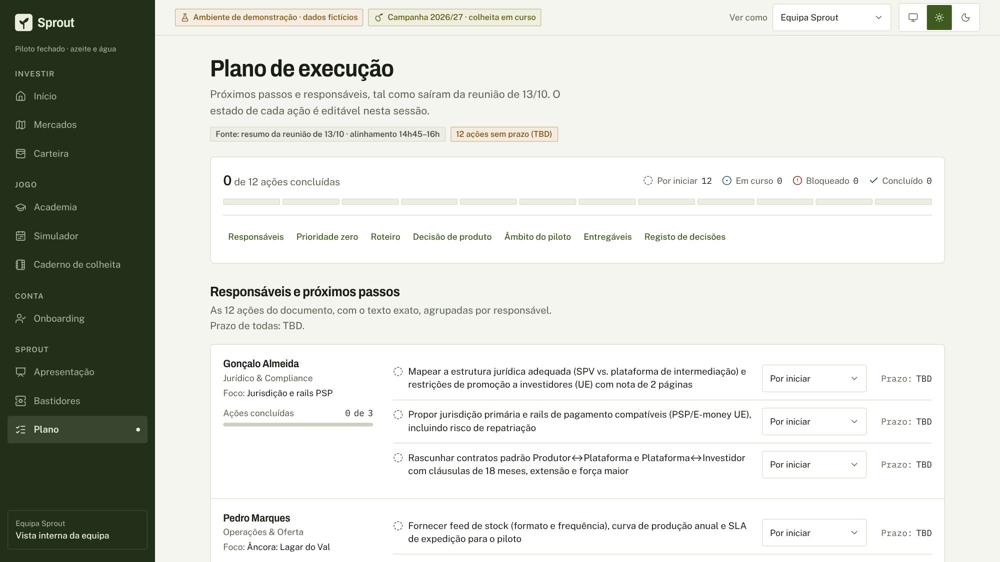
Um protótipo com dados fictícios. Os números verificados dizem que o modelo, tal como foi desenhado, não chega ao break-even até 2031; o desenho recomendado aproxima-se, mas também não fecha.